Heads Up!
This project is in Beta. That means we’re still testing it, and there’s a small chance there could be some bugs or typos. If you’re a club leader trying out this project, please complete this short questionnaire (or email ) to let us know how it went!
Introduction
You are going to make a balloon-popping game!
Step 1: Animating a balloon
Activity Checklist
Start a new project, and delete the cat sprite, so that your project is empty.
Add in a new balloon sprite, and a suitable stage backdrop.

Add this code to your balloon, so that it bounces around the screen:
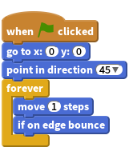
Test out your balloon. Does it move too slowly? Change the numbers in your code if you want to speed it up a bit.
Did you also notice that your balloon flips as it moves around the screen?

Balloons don’t move like this! To fix this, click on the balloon sprite icon, and then click the blue
iinformation icon.
In the ‘rotation style’ section, click the dot to stop the balloon rotating.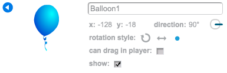
Test your program again to see if the problem is fixed.
Save your project
Step 2: Random balloons
Activity Checklist
With the code you have now, your balloon will always start in the same place and move in the same path. Click the flag a few times to start your program, and you’ll see it’s the same every time.
Instead of using the same x and y position each time, you can let Scratch choose a random number instead. Change your balloon’s code, so that it looks like this:
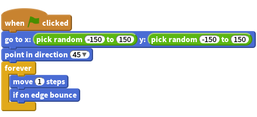
If you click the green flag a few times, you should notice that your balloon starts in a different place each time.
You could even use a random number to choose a random balloon colour each time:

What happens if this code is put at the start of your program? Does anything different happen if you put this code inside the
foreverloop? Which do you prefer?
Save your project
Challenge: More randomness
Can you make your balloon start by pointing in a random direction (between -90 and 180)?
Save your project
Step 3: Popping balloons
Lets allow the player to pop the balloons!
Activity Checklist
Click on your balloon sprite, and then click the ‘Costumes’ tab. You can delete all of the other costumes, just leaving 1 balloon costume. Add a new costume, by clicking ‘Paint new costume’ and create a new costume called ‘burst’.

Make sure that your balloon switches to the right costume when the game starts. Your code should now look like this:
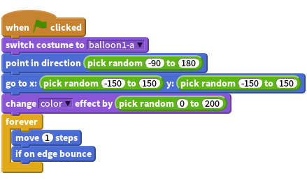
To allow the player to burst a balloon, add this code:
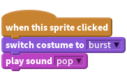
Test out your project. Can you pop the balloon? Does it work as you expected? You’ll need to improve this code, so that when the balloon is clicked, it shows the ‘burst’ costume for a short time, and then disappears. You can make all of this happen by changing your balloon
when sprite clickedcode to this: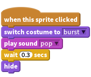
Now that you’re hiding the balloon when it’s clicked, you’ll also need to add a
showblock to the start of thewhen flag clickedcode.Try popping a balloon again, to check that it works properly.
Save your project
Step 4: Adding a score
Let’s make things more interesting by keeping score.
Activity Checklist
To keep the player’s score, you need a place to put it. A variable is a place to store data that can change, like a score.
To create a new variable, click on the ‘Scripts’ tab, select
Dataand then click ‘Make a Variable’.
Type ‘score’ as the name of the variable, and click ‘OK’ to create it. You’ll then see lots of code blocks that can be used with your
scorevariable.
You’ll also see the score in the top-left of the stage.
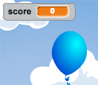
When a new game is started (by clicking the flag), you want to set the player’s score to 0. Add this code to the top of the balloon’s
when flag clickedcode:Whenever a balloon is popped, you need to add 1 to the score:
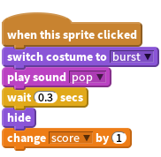
Run your program again and click the balloon. Does your score change?
Save your project
Step 5: Lots of balloons
Popping 1 balloon isn’t much of a game, so let’s add lots more!
Activity Checklist
One simple way to get lots of balloons is just to right-click on the balloon sprite and click ‘duplicate’. If you keep doing that, you’ll have lots of balloons!
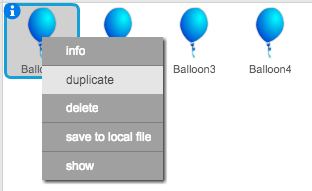
Duplicating your balloon sprite is OK if you only want a few, but what if you need 20? or 100? or 1000? Are you really going to click ‘duplicate’ that many times?
Another way of getting lots of balloons is to clone the balloon sprite.
Drag your balloon
when flag clickedcode (except thescoreblock) off of the event (don’t delete it), and instead add code to create 20 balloon clones: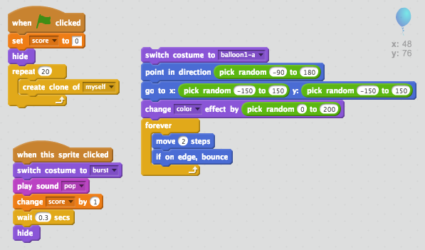
You can now attach the code you’ve just removed to the
when I start as a cloneevent (adding ashowblock at the top), so that your balloon code now looks like this: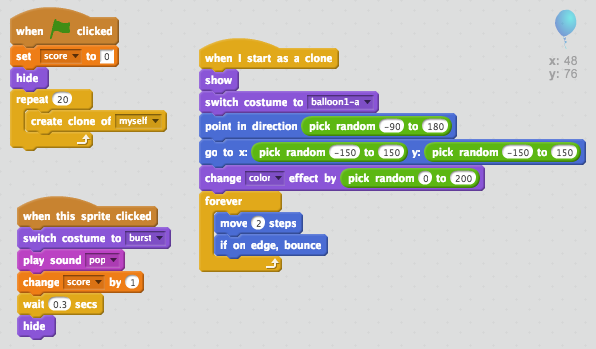
Now when the flag is clicked, your main balloon sprite will hide and then clone itself 20 times. When each of these 20 clones is started, they will each bounce around the screen randomly, just as they did before.
Test your project to see if you can pop the 20 balloons!
Save your project
Step 6: Adding a timer
You can make your game more interesting, by only giving your player 10 seconds to pop as many balloons as possible.
Activity Checklist
You can use another variable to store the remaining time left. Create a new variable called ‘time’:

This is how the timer should work:
- The timer should start at 10 seconds;
- The timer should count down every second;
- The game should stop when the timer gets to 0.
Here’s the code to do this, which you can add to your stage:
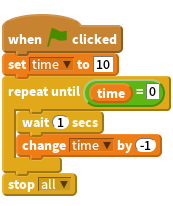
To add the
repeat untiltime= 0code, first you’ll need to drag a green=block, onto yourrepeat untilblock:
You can then drag your
timevariable onto the=block:
- The timer should start at 10 seconds;
Drag your ‘time’ variable display to the right side of the stage. You can also right-click on the variable display and choose ‘large readout’ to change how the time is displayed.
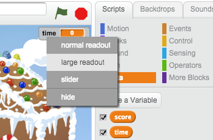
Test your game. How many points can you score? If your game is too easy, you can:
- Give the player less time;
- Have more balloons;
- Make the balloons move faster;
- Make the balloons smaller.
Test your game a few times until you’re happy that it’s the right level of difficulty.
- Give the player less time;
Save your project
Challenge: More objects
Can you add in other objects to your game? You can add good objects, like donuts, that give you lots of points, or bad objects, like bats, that take points away.
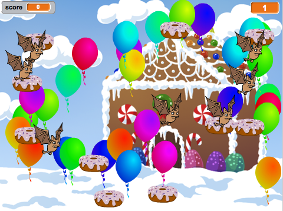
You’ll need to think about the objects you’re adding. Think about:
- How many will there be?
- How big is it? How does it move?
- How many points will you score (or lose) for clicking it?
- Will it moves faster or slower than the balloons?
- What will it look/sound like when it’s been clicked?
If you need help adding another object, you can reuse the steps above!